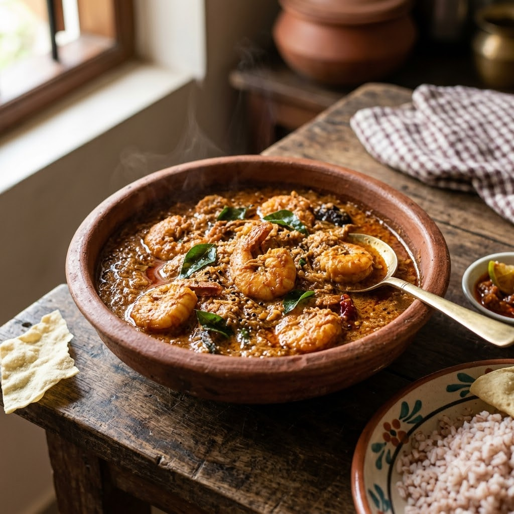

Kerala-Style Prawn Curry

Kerala-Style Prawn Curry
Chef Magic – Sauté + Boil Auto 24 min — Serves 4
Gluten-Free • High-Protein • Kerala
🧑🍳 Chef Magic🍽 Serves 4
Prep ahead: Soak 2–3 pieces of kokum in warm water for 10 minutes if using, to soften before adding.
Ingredients
- 500g prawns, peeled and deveined
- 1 onion, sliced
- 1 tbsp ginger-garlic paste (adrak-lehsun paste)
- 1.5 tsp red chilli powder (lal mirch powder)
- 1/2 tsp turmeric (haldi)
- 1 cup coconut milk
- 2–3 pieces kokum (or 1 tbsp tamarind (imli) paste)
- 9 curry leaves (kadi patta)
- 2 tbsp coconut oil
- Salt to taste
Method
1Add coconut oil and curry leaves to the jar; select Sauté (Speed 2–4, ~130–160°C) and cook the sliced onion for 6 minutes until soft.
2Add ginger-garlic paste, chilli powder and turmeric; sauté 2 minutes.
3Add coconut milk, kokum and salt; select Boil (Speed 1–2, 100°C) and simmer for 6 minutes.
4Gently add the prawns and simmer a further 5 minutes until just cooked through — avoid stirring hard.
5Serve hot with steamed rice.